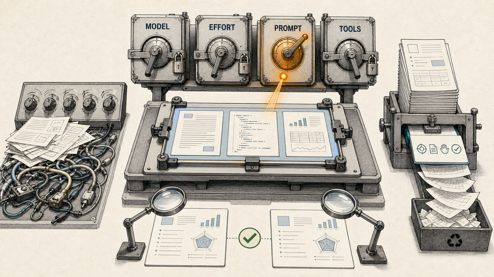
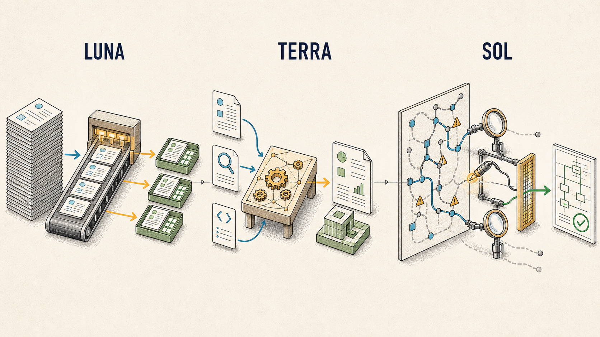

GPT-5.6 가이드를 읽으며 다시 정한 것: effort를 올리기 전에 프롬프트부터 줄여보기
새 모델이 나오면 두 가지부터 하고 싶어진다. reasoning effort를 최고로 올리고, 이전 모델이 놓치던 내용을 프롬프트에 더 자세히 적는 일이다. 모델이 강해졌으니 더 많이 생각하게 하면 더 좋은 답이 나올 것 같고, 아직 불안한 부분은 지시를 한 줄씩 보태면 해결될 것 같다.
그런데 OpenAI의 GPT-5.6 model guidance를 읽으며 오히려 반대 순서가 필요하다고 생각했다. 새 모델을 도입할 때 가장 먼저 할 일은 설정을 최대로 올리는 것이 아니다. 지금 쓰는 대표 작업을 그대로 두고 기준 결과를 만든 다음, 모델만 바꿔 비교해야 한다. 그다음에는 effort를 한 단계 낮춰보고, 프롬프트에서 없어도 되는 문장을 덜어내며, tool call이 실제로 필요한 경로에만 놓였는지 확인해야 한다.
이 글은 GPT-5.6을 독립적으로 벤치마크한 결과가 아니다. 2026년 7월 14일 기준 OpenAI 공식 문서를 읽고, 새 모델의 기본값을 어떤 순서로 정할지 정리한 운영 메모에 가깝다. 핵심은 간단하다.
모델 교체는 이름만 바꾸는 일이 아니라, 대표 작업을 다시 평가하는 일이다. 더 주기 전에 무엇을 줄여도 되는지부터 확인해야 한다.

같은 workload를 기준선에 고정하고 model·effort·prompt·tools를 하나씩 비교한다. 여러 변수를 동시에 바꾸면 무엇이 결과를 바꿨는지 알 수 없다.
모델·effort·prompt를 한꺼번에 바꾸면 아무것도 배우지 못한다
새 모델을 시험할 때 흔히 하는 실수는 여러 변수를 동시에 바꾸는 것이다. 모델 버전을 올리고, reasoning effort를 높이고, system prompt를 다시 쓰고, 도구 구성까지 바꾼다. 결과가 좋아지면 새 모델 덕분이라고 생각하기 쉽다. 나빠지면 반대로 모델이 기대에 못 미친다고 결론 내린다.
하지만 이 비교에서는 무엇이 결과를 바꿨는지 알 수 없다. 모델이 좋아진 것인지, 더 큰 reasoning budget을 쓴 것인지, 프롬프트에 추가한 예시가 특정 작업에만 우연히 맞았는지, 도구 호출 경로가 달라져 근거를 더 많이 가져온 것인지 분리할 수 없기 때문이다.
공식 가이드는 GPT-5.5나 GPT-5.4에서 GPT-5.6으로 옮길 때 현재 reasoning effort를 기준선으로 유지하고, 대표 작업에서 같은 설정과 한 단계 낮은 설정을 비교하라고 권한다. GPT-5.6이 더 적은 토큰으로 품질을 유지하거나 높일 수 있는 경우가 있지만, 최적 설정은 workload에 달렸다는 설명도 함께 붙는다. 이 단서가 중요하다. 새 모델의 성능을 일반적인 인상으로 판단하지 말고, 내가 실제로 맡길 작업으로 평가해야 한다는 뜻이기 때문이다.
내가 생각하는 최소 비교 단위는 채팅 몇 번이 아니라 반복해서 등장하는 작업 묶음이다. 짧은 설명, 출처가 있는 문서 분석, 코드 변경, 설계 검토, 여러 도구를 거치는 조사처럼 실패 형태가 다른 작업을 고른다. 각 작업에는 “좋아 보인다”가 아니라 통과 조건을 붙인다. 필요한 근거가 모두 들어갔는지, 금지된 행동을 하지 않았는지, 결과물이 실제로 열리는지, 요청한 형식을 지켰는지처럼 확인 가능한 조건이어야 한다.
이 기준 결과를 보존한 뒤에야 모델만 바꾼 비교가 의미를 갖는다. 이후 effort, prompt, tool routing을 각각 별도 실험으로 다뤄야 한다. 이 순서를 지키면 새 모델에 대한 감상 대신 어떤 작업에서 무엇이 달라졌는지를 기록할 수 있다.
대표 작업을 고정한다는 말도 입력 문장 몇 개를 저장한다는 뜻에 그치지 않는다. 같은 자료와 도구 접근 조건을 제공하고, 판정 기준도 함께 보존해야 한다. 한 번은 최신 문서를 열어주고 다음번에는 오래된 요약만 준다면 모델 비교가 아니라 context 비교가 된다. 평가자가 결과를 보고 그때그때 기준을 바꾸는 경우도 마찬가지다. 최소한 필수 사실, 허용 가능한 표현, 실패로 볼 누락, 실제 artifact 확인 방법을 먼저 적어두는 편이 좋다. 완벽한 benchmark를 만들지 못하더라도 비교 중에 평가 기준이 움직이는 일은 줄일 수 있다.
Reasoning effort는 품질 버튼이 아니라 workload budget이다
Reasoning effort는 이름 때문에 오해하기 쉽다. low보다 medium이, medium보다 high가 언제나 더 좋은 답을 줄 것처럼 보인다. 그러나 공식 문서가 권하는 방식은 effort를 품질 등급표로 읽는 것과 다르다.
GPT-5.6은 none, low, medium, high, xhigh, max를 지원한다. 문서는 medium을 균형 잡힌 시작점으로, low를 지연에 민감한 작업의 후보로 제시한다. high나 xhigh는 더 많은 추론이 측정 가능한 품질 향상을 만들 때 사용하고, max는 품질 우선의 가장 어려운 작업에 남겨두라고 설명한다. 기존에 xhigh를 썼다면 max와 비교해 품질·지연·비용의 균형을 직접 찾는 방식이다.
여기서 effort는 “정답률을 한 칸 올리는 스위치”라기보다 모델이 탐색과 검증에 사용할 수 있는 workload budget에 가깝다. 결과 품질은 모델과 effort만으로 결정되지 않는다. 작업 난도, 주어진 맥락, 사용할 수 있는 도구, 평가 기준이 함께 작동한다.
quality = f(model, task, context, tools, effort, evaluator)따라서 effort=max는 더 많은 모델 작업을 허용하는 설정이지, 더 나은 결과를 보장하는 약속이 아니다. 짧은 요약에서는 불필요한 지연과 비용만 늘 수 있고, 복잡한 코드 검토에서는 놓치던 결함을 찾는 데 도움이 될 수 있다. 어느 쪽이 맞는지는 미리 정할 수 없다.
내가 새 모델을 평가한다면 우선 현재 effort를 그대로 둔다. 같은 작업에서 한 단계 낮은 effort를 비교하고, 어려운 소수 작업에만 한 단계 높은 설정을 추가한다. 정확성뿐 아니라 답변 완결성, 근거 보존, 총 토큰, 지연, 비용을 함께 본다. 아직 이 비교를 통제된 환경에서 수행한 것은 아니므로 low가 medium보다 낫다거나, 반대로 높은 effort가 안전하다고 결론 내릴 수는 없다. 지금 정할 수 있는 것은 승자가 아니라 실험 순서다.
Pro mode와 “더 깊게 생각해”는 다른 계층의 설정이다
GPT-5.6의 pro mode도 같은 이유로 프롬프트와 분리해서 봐야 한다. 공식 문서에 따르면 pro는 별도 모델 slug가 아니다. Responses API에서 같은 GPT-5.6 모델을 유지하고 reasoning.mode: "pro"로 설정하는 실행 모드다. reasoning mode와 reasoning effort는 서로 독립적이며, effort를 생략하면 standard와 pro 모두 medium이 기본값이다.
Pro mode는 답을 반환하기 전에 더 많은 모델 작업을 적용해 어려운 요청의 신뢰도를 높일 수 있다. 대신 지연이 늘고, 그 과정의 토큰도 사용량에 합산된다. 그러므로 routine 작업 전체에 켜기보다 작은 품질 차이가 실제 결과를 바꾸는 복잡한 최적화, 고가치 코드 검토, 명확한 평가 기준이 있는 깊은 분석에서 standard와 비교할 후보에 가깝다.
중요한 점은 pro mode를 쓰기 위해 프롬프트에 “더 깊게 생각해”, “여러 후보를 만든 뒤 최고의 답을 골라”, “pro처럼 행동해” 같은 문장을 붙일 필요가 없다는 것이다. 공식 가이드는 standard에서 쓰던 outcome-focused prompt를 그대로 유지하라고 안내한다. 목표, 관련 맥락, 제약, 필요한 근거, 성공 기준, 출력 형식을 적고 reasoning mode와 effort는 API 설정에서 다룬다.
이 구분이 흐려지면 프롬프트가 운영 계약이 아니라 provider-specific control code가 된다. 모델의 역할과 성공 조건을 설명해야 할 자리에 런타임 설정을 흉내 내는 문장이 쌓인다. 나중에 모델이나 provider를 바꾸면 그 문장이 여전히 필요한지 알기 어렵다. 반대로 계층을 나누면 같은 프롬프트를 두고 standard와 pro, 여러 effort를 비교할 수 있다.
API 비용을 원화로 바꿔보면 effort의 의미가 더 선명해진다
API 가격표를 달러로만 보면 설정 차이가 작아 보인다. 하지만 호출량이 쌓이는 운영 환경에서는 model, context 길이, output token이 월 비용을 크게 바꾼다. 2026년 7월 14일 OpenAI 공식 가격표에서 gpt-5.6 alias가 연결되는 flagship 모델은 gpt-5.6-sol이다. Standard의 short-context 요금은 100만 토큰당 입력 5달러, cached input 0.5달러, cache write 6.25달러, 출력 30달러다.
같은 날 공개 환율 데이터의 원·달러 환율은 1달러당 약 1,497원이었다. 아래 표는 계산을 단순하게 하기 위해 1달러=1,500원으로 반올림했다. 실제 청구액은 결제 시점 환율, 카드사 환전 방식과 수수료, 세금에 따라 달라질 수 있다.
| 모델 | 입력 100만 토큰 | Cached input 100만 토큰 | Cache write 100만 토큰 | 출력 100만 토큰 |
|---|---|---|---|---|
gpt-5.6-sol | $5 / 약 7,500원 | $0.50 / 약 750원 | $6.25 / 약 9,375원 | $30 / 약 45,000원 |
gpt-5.6-terra | $2.50 / 약 3,750원 | $0.25 / 약 375원 | $3.125 / 약 4,688원 | $15 / 약 22,500원 |
gpt-5.6-luna | $1 / 약 1,500원 | $0.10 / 약 150원 | $1.25 / 약 1,875원 | $6 / 약 9,000원 |

Luna·Terra·Sol을 단순한 가격 등급이 아니라 workload의 형태로 나눈 모습. 이는 공식적인 고정 업무 분류가 아니라 representative workload eval을 시작하기 위한 라우팅 후보다.
예를 들어 한 번의 작업이 cached input을 제외하고 입력 10만 토큰과 출력 2만 토큰을 사용했다고 가정해보자. short-context Standard 기준 예상 비용은 다음과 같다.
| 모델 | 계산 | 1회 예상 비용 |
|---|---|---|
gpt-5.6-sol | 30×0.02 | $1.10 / 약 1,650원 |
gpt-5.6-terra | 15×0.02 | $0.55 / 약 825원 |
gpt-5.6-luna | 6×0.02 | $0.22 / 약 330원 |
같은 작업을 1,000번 실행하면 단순 환산으로 각각 약 165만원, 82만 5천원, 33만원이 된다. 작은 단가 차이가 반복 호출에서는 운영비 차이로 커진다. 반대로 prompt cache가 실제로 적중하거나 출력 토큰을 줄이면 비용 구조도 달라진다. 따라서 평균 입력·cached input·cache write·출력 토큰을 나눠 기록하지 않고 “호출당 평균 비용”만 보면 최적화 지점을 찾기 어렵다.
OpenAI 가격표는 short context와 long context의 단가도 구분한다. gpt-5.6-sol의 long-context Standard 요금은 100만 토큰당 입력 10달러, cached input 1달러, cache write 12.50달러, 출력 45달러다. 위와 같은 입력 10만·출력 2만 토큰을 long-context 단가로 계산하면 1회 약 2,850원이다. 다만 실제 요청이 어느 구간으로 청구되는지는 사용한 모델과 context 조건을 공식 가격표에서 다시 확인해야 한다.
Pro mode에는 별도의 pro 모델 단가가 붙는 방식이 아니다. 공식 가이드에 따르면 pro 과정에서 사용한 토큰이 usage에 합산되고, 선택한 모델의 표준 token rate로 청구된다. 그래서 같은 입력과 최종 출력 길이만 보고 standard와 pro의 비용이 같다고 예상하면 안 된다. Pro가 내부적으로 더 많은 모델 작업을 수행하면 보고되는 토큰 사용량과 총비용도 늘 수 있다.
이 숫자를 보면 effort를 workload budget으로 다뤄야 하는 이유가 더 분명해진다. 단가만 낮추는 것이 목표는 아니다. 대표 작업의 성공률을 유지하면서 출력 토큰을 어디까지 줄일 수 있는지, 캐시가 실제로 적중하는지, 평가를 거쳐 Terra나 Luna로 옮길 수 있는 작업과 Sol·pro의 추가 비용이 정당화되는 작업을 나누는 것이 핵심이다.
새 모델일수록 프롬프트를 더 쓰기 전에 덜어낼 부분을 찾는다
새 모델이 더 잘 이해한다고 들으면 프롬프트를 짧게 써도 된다고 생각할 수 있다. 반대로 실제 운영에서는 기존 규칙을 지우기가 불안해 새 지시만 계속 추가되기도 한다. 한 번 생긴 금지사항은 다른 표현으로 반복되고, 오래된 모델의 약점을 보완하던 workaround가 남고, 지금은 사용하지 않는 도구 설명도 system prompt를 차지한다.
GPT-5.6 공식 문서는 반복 instruction과 example을 제거하고 tool description을 단순화한 lean prompt를 권한다. OpenAI가 공개한 내부 coding-agent 평가 표본에서는 leaner system prompt 구성들이 평가 점수를 약 10–15% 높이는 동시에 총 토큰을 41–66%, 비용을 33–67% 줄였다고 소개한다. 이는 OpenAI 내부 표본에서 관찰된 방향성 범위이지, 독립 벤치마크 결과는 아니다.
내 환경에서 독립적으로 재현한 결과가 아니고, “프롬프트는 짧을수록 좋다”는 일반 법칙도 아니다. 공식 문서 역시 이미 작동하는 prompt와 tool set에서 시작해 instruction, example, tool을 한 묶음씩 제거한 뒤 같은 eval을 다시 돌리라고 권한다.
그래서 prompt diet는 글자 수 줄이기가 아니라 중복과 역할 혼선을 찾는 작업이어야 한다. 먼저 제거 후보를 고른다.
- 최신 모델이 기본적으로 수행하는 행동을 여러 번 지시한 문장
- 같은 금지사항을 표현만 바꿔 반복한 규칙
- 과거 모델의 특정 실패를 우회하려고 넣었지만 지금은 검증되지 않은 workaround
- 현재 작업에서 호출할 수 없거나 사용하지 않는 tool description
- 제품 요구사항이나 측정된 실패와 연결되지 않은 예시
- “간결하게”, “친절하게”처럼 실제 출력 기준이 모호한 스타일 지시
반대로 남겨야 할 내용도 분명하다.
- 작업의 목표와 acceptance criteria
- 사용할 출처와 evidence boundary
- 외부 쓰기, 파괴적 작업, 결제처럼 사람이 승인해야 하는 경계
- 모델이 추측할 수 없는 domain-specific 사실과 용어
- 최종 산출물의 형식과 필수 항목
- 완료를 판단할 verification rule
프롬프트를 줄이면서 이 항목까지 없애면 효율화가 아니라 사양 삭제가 된다. 좋은 prompt diet는 모델이 이미 처리할 수 있는 절차 설명을 걷어내되, 틀렸을 때 실제 피해가 생기는 경계와 성공 기준은 더 또렷하게 남기는 일이라고 생각한다.
프롬프트는 성격 설명보다 운영 계약에 가깝다
에이전트 프롬프트가 길어지는 이유 중 하나는 모든 상황을 자연어로 예외 처리하려 하기 때문이다. “먼저 물어봐라”, “허락 없이 바꾸지 마라”, “하지만 테스트는 실행해라” 같은 문장이 여러 위치에서 충돌한다. 모델은 현재 요청이 읽기인지 변경인지, 안전한 로컬 작업인지 외부 side effect인지 판단하기 어려워진다.
공식 문서가 제안하는 autonomy와 approval boundary는 더 작고 구조적이다. 이를 운영 계약처럼 압축하면 다음과 같이 정리할 수 있다.
answer / explain / review / diagnose / plan
→ 관련 자료를 확인하고 결과를 보고한다. 구현하지 않는다.
change / build / fix
→ 요청 범위의 로컬 변경과 비파괴 검증까지 수행한다.
external write / destructive action / purchase / material scope expansion
→ 명시적 승인을 받는다.이 정책이 모든 환경에서 더 잘 작동한다고 단정할 수는 없다. 다만 같은 승인 규칙을 여러 문장으로 반복하는 것보다, 요청 유형과 허용 범위를 한곳에서 연결하는 편이 평가하기 쉽다. 안전한 로컬 행동과 승인이 필요한 외부 행동도 분리할 수 있다.
여기서 프롬프트의 역할은 모델에게 성격을 부여하는 것이 아니다. 목표와 근거, 권한, 성공 조건, 결과 형식을 합의하는 것이다. 자율성을 높이고 싶다면 “주도적으로 행동해”를 반복하기보다 어디까지 스스로 진행할 수 있고 어디에서 멈춰야 하는지를 적는 편이 낫다.
Tool call이 많다고 더 agentic한 것은 아니다
GPT-5.6 가이드에서 prompt diet와 함께 눈에 들어온 부분은 Programmatic Tool Calling, 즉 PTC의 선택 기준이었다. PTC는 여러 도구 결과를 코드로 처리한 뒤 작은 구조화 결과로 줄일 수 있는 bounded workflow에 적합하다. filtering, joining, ranking, deduplication, aggregation, validation처럼 처리 규칙이 비교적 예측 가능한 단계가 여기에 해당한다.
반대로 호출이 많거나 병렬이라는 이유만으로 PTC를 택할 필요는 없다. 각 결과가 모델의 다음 판단을 바꾸거나, 중간 결과가 이미 작거나, 행동에 승인이 필요하거나, 원본 citation과 artifact를 보존해야 한다면 direct tool call이 더 적합할 수 있다.
내가 이 기준을 일반적인 에이전트 운영 언어로 옮기면 다음 네 단계가 된다.
mechanical reduction → code / programmatic stage
semantic judgment → model
approval → human
final verification → independent gate예를 들어 여러 파일의 metadata를 모아 중복을 제거하고 개수를 계산하는 일은 코드가 잘한다. 어떤 source claim이 과장됐는지, 두 문서가 의미상 충돌하는지는 모델이 판단할 일이다. 외부 발행은 사람의 승인이 필요하다. 마지막으로 “게시가 끝났다”는 주장은 실제 공개 URL이나 receipt를 다시 확인해야 성립한다.
이 분리는 단지 tool call 수를 줄이기 위한 것이 아니다. 각 단계가 무엇을 책임지는지 명확하게 만든다. 프로그램의 출력이 맞더라도 최종 답변에서 필수 근거나 단서가 빠질 수 있다. 그래서 program output과 사람이 읽는 final answer를 따로 검사해야 한다는 공식 문서의 지침도 중요하다. 호출 횟수나 중간 토큰이 줄었다는 사실은 최종 결과가 기존 eval을 통과할 때만 개선으로 셀 수 있다.
내가 다음 migration에서 먼저 고정할 체크리스트
결국 새 모델을 잘 도입하는 문제는 최고 설정을 찾는 일이 아니라 비교 가능한 운영 절차를 만드는 일에 가깝다. 지금 기준으로는 다음 순서를 출발점으로 삼으려 한다.
- 대표 작업 5–10개를 고정한다. 쉬운 요약만 고르지 않고 출처 분석, 코드 변경, 설계 검토, 도구 사용처럼 실패 형태가 다른 작업을 섞는다.
- 현재 결과를 baseline으로 보존한다. 모델, effort, prompt, tool set과 함께 성공 여부, 근거, 토큰, 지연, 비용을 기록한다.
- 모델만 먼저 바꾼다. 같은 effort와 같은 outcome-focused prompt로 결과 차이를 본다.
- 같은 effort와 한 단계 낮은 effort를 비교한다. 높은 설정은 어려운 작업에서 측정 가능한 이득이 있는지 확인할 때 추가한다.
- Prompt diet를 별도 실험으로 진행한다. 반복 instruction, 낡은 workaround, 무관한 example과 verbose tool description을 한 묶음씩 제거한다.
- Tool routing을 task shape에 맞춘다. 기계적 reduction은 programmatic stage, 의미 판단은 model, 외부 행동은 human approval로 나눈다.
- 최종 답변을 독립적으로 검증한다. 작업 성공, 완결성, 필수 근거, 실제 artifact나 receipt를 확인한다.
- 어려운 소수 작업만 pro나 max 후보로 둔다. standard 대비 품질 또는 신뢰도 향상이 추가 지연과 비용을 정당화하는지 본다.
- 변경 이유를 기록한다. 한두 번의 인상이나 데모 결과만으로 전체 기본값을 올리지 않는다.
새 모델이 나오면 무엇을 더 켤지부터 고민하기 쉽다. 하지만 더 오래 남는 것은 반대쪽 질문인 것 같다. 기존 workload를 그대로 통과하면서 어느 effort까지 낮출 수 있는가. 어떤 프롬프트 문장은 이제 없어도 되는가. 어느 단계는 모델이 아니라 코드가 처리해야 하는가. 그리고 완료됐다는 말은 무엇으로 확인할 것인가.
GPT-5.6을 위한 하나의 정답 설정은 아마 없을 것이다. 대신 baseline을 보존하고 변수를 하나씩 바꾸는 절차는 만들 수 있다. 모델이 이미 잘하는 부분은 프롬프트에서 걷어내고, 어려운 작업에만 reasoning budget을 쓰고, 마지막 결과가 실제 기준을 만족했는지 확인하는 것. 새 모델을 도입할 때 내가 먼저 바꾸려는 것은 effort 값보다 이 순서다.
참고자료
- OpenAI, Using GPT-5.6: model guidance — 2026-07-14 확인. 모델·API 기능과 권장사항은 이 시점의 문서 snapshot을 기준으로 작성했다.
- OpenAI, API Pricing — 2026-07-14 확인. GPT-5.6 family의 Standard short/long-context 단가는 이 가격표를 기준으로 했다.
- ExchangeRate-API, USD latest exchange rates — 2026-07-14 00:02 UTC 갱신값
1 USD = 1,496.999138 KRW를 확인하고 본문 계산에서는 1,500원으로 반올림했다.